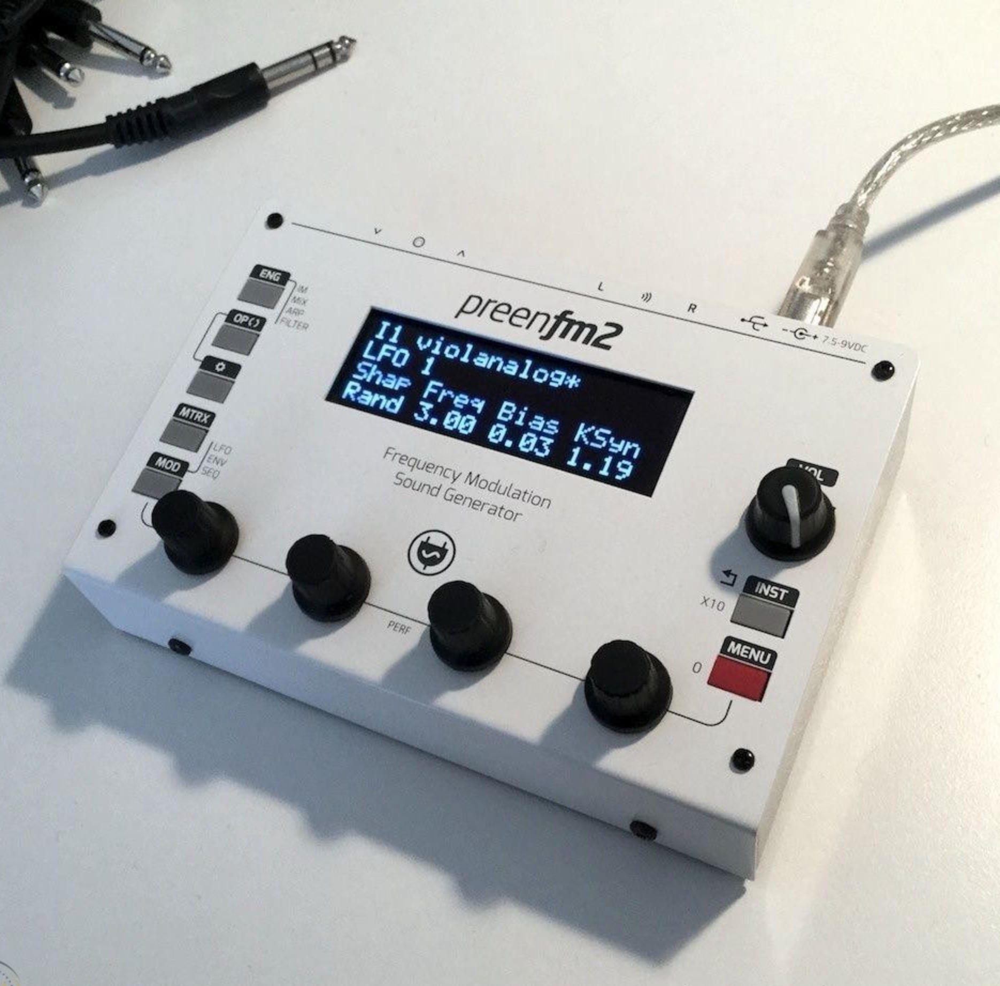

Preenfm brings the old FM synthesis in small open-source modern DIY boxes.

There is 4 independent instruments. Each of them has: - Powerful arpeggiator (Mutable-Instruments opensource algorithm). - 1 effect Slot (LP, HP, Bass boost, Band Pass, crusher) - 1 gate effect - 4 rapid access performance parameters - The 4 instruments can be saved all at the same time in combo presets. - Each instrument has its own modifiable midi channel. They can share the same for FAT quadruple timbres notes. - Modifiable number of allocated voices… Between 1 and 14. - 28 FM algorithms from 3 to 6 operators Documentation NB: New PreenFM 3 is not open-source anymore. Please do not submit this design.
All DB data
- Name: PreenFM 2
- Author: Xavier Hosxe
- Link: https://github.com/Ixox/preenfm2
- Demo: https://www.youtube.com/watch?v=QXQLlKPX7CQ
- Picture: ../pics/preenfm-2.jpg
- Description: Preenfm brings the old FM synthesis in small open-source modern DIY boxes.
- Notes: There is 4 independent instruments. Each of them has: - Powerful arpeggiator (Mutable-Instruments opensource algorithm). - 1 effect Slot (LP, HP, Bass boost, Band Pass, crusher) - 1 gate effect - 4 rapid access performance parameters - The 4 instruments can be saved all at the same time in combo presets. - Each instrument has its own modifiable midi channel. They can share the same for FAT quadruple timbres notes. - Modifiable number of allocated voices… Between 1 and 14. - 28 FM algorithms from 3 to 6 operators Documentation NB: New PreenFM 3 is not open-source anymore. Please do not submit this design.
- Artifacts: {“Schematic”=>true}{“PCB”=>true}{“BOM”=>false}{“FW”=>true}{“Docs”=>false}{“Enclosure”=>true}
- Tags: DigitalPolyphonicKitMIDI
- Level: Intermediate
{kind=link}